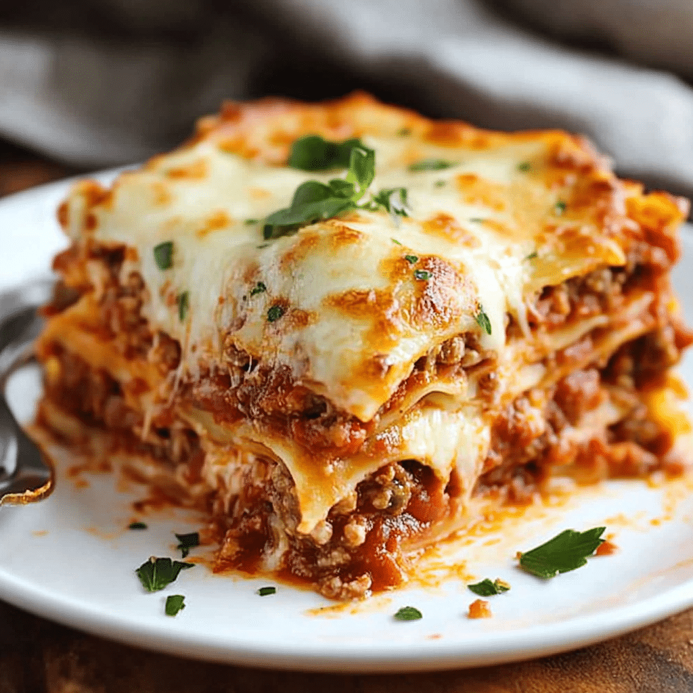

Odin Recipes
Lasagna Recipe

Description
Lasagna is a classic Italian dish that consists of layers of pasta, meat sauce, and cheese. It's a hearty and comforting meal that's perfect for family dinners or special occasions.
Ingredients
- Lasagna noodles
- Ground beef
- Marinara sauce
- Ricotta cheese
- Shredded mozzarella cheese
- Parmesan cheese
- Egg
- Italian seasoning
- Salt and pepper
Steps
- Preheat your oven to 375°F (190°C).
- In a large skillet, cook the ground beef over medium heat until browned. Drain excess fat.
- Add marinara sauce to the skillet and simmer for 10 minutes.
- In a mixing bowl, combine ricotta cheese, egg, Italian seasoning, salt, and pepper.
- Spread a layer of meat sauce in the bottom of a baking dish.
- Layer lasagna noodles, ricotta mixture, mozzarella, and Parmesan cheese. Repeat layers.
- Finish with a layer of meat sauce and mozzarella cheese on top.
- Cover with foil and bake for 25 minutes. Remove foil and bake for an additional 15 minutes.
- Let it cool for a few minutes before serving.